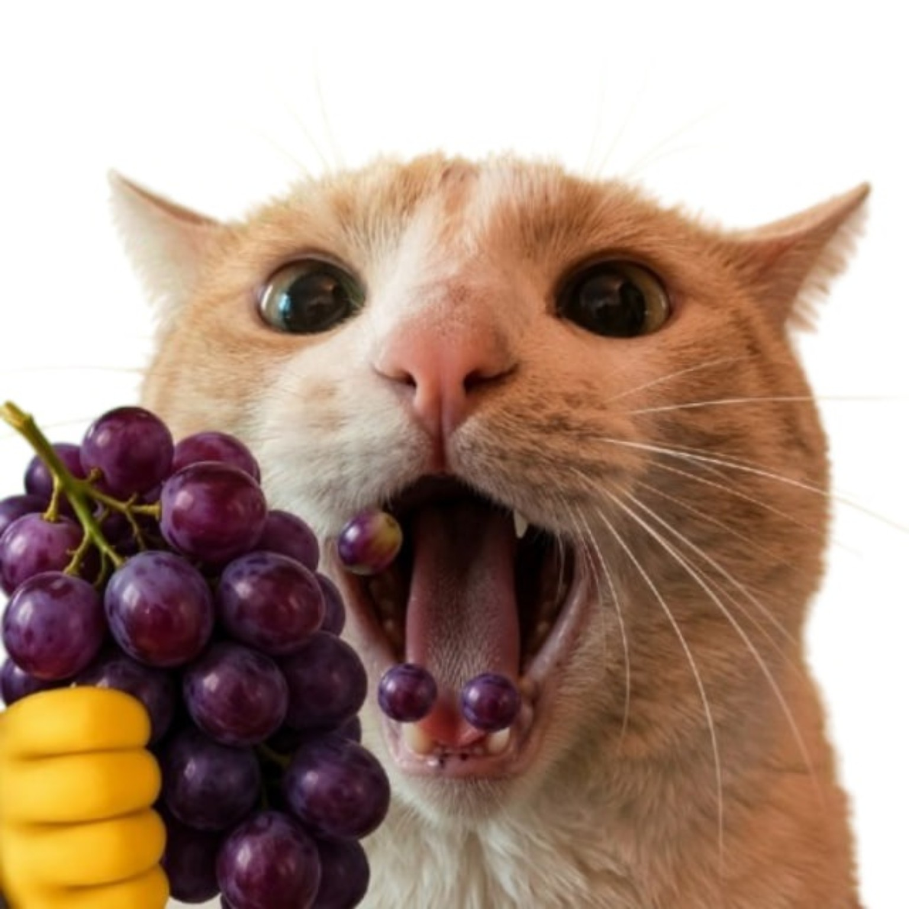

open to projectsDeveloper · Researcher
Yan / Atlas
Разработчик и специалист по OSINT / GEOINT. Создаю полезные инструменты, автоматизирую рутину и превращаю открытые данные в понятные результаты.
Обо мне
Занимаюсь разработкой прикладных инструментов и исследованием открытых источников. Работаю на стыке OSINT, GEOINT, автоматизации и веб-разработки.
Навыки
⌕ OSINT
◎ GEOINT
◇ Pentest
⌁ Research
⚙ Automation
</> Web / Tools
Проекты
Desktop↗
DeskMate
Настольный AI-ассистент и маскот для повседневной работы.
Открыть проектChat↗
GhostChat
Чат-проект с акцентом на лёгкость, приватность и удобство. (На данный момент в закрытом тестировании)
Открыть проектSecurity↗
Kiro
Инструмент для задач пентеста и технических исследований.
Открыть проект